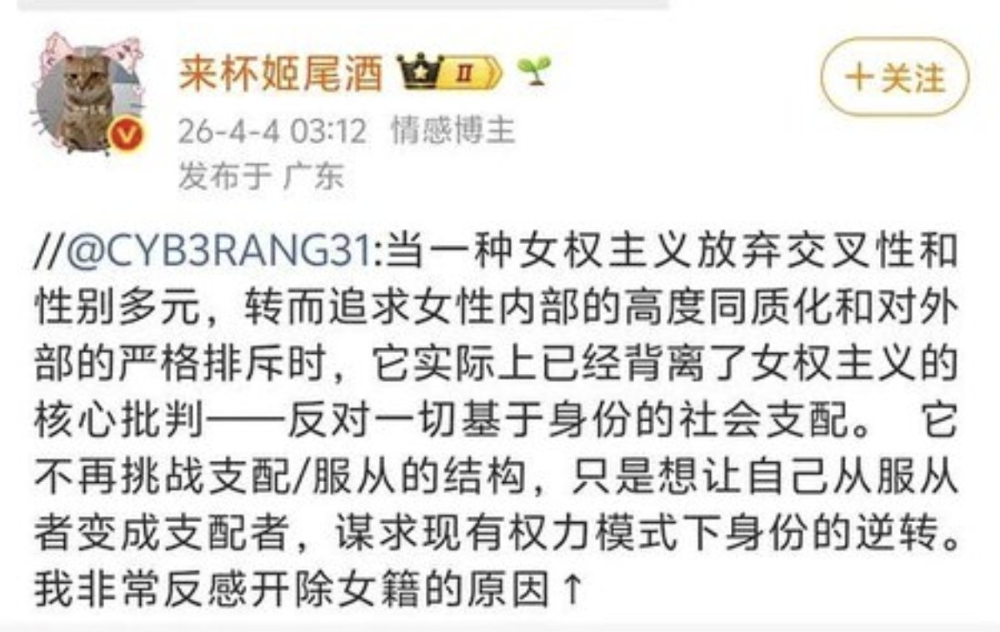
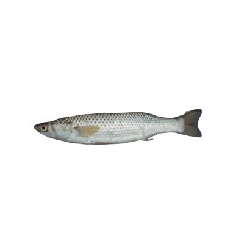

432InfantryRegiment
@432Ifantrygroup
@qi_dang23244 @wodanggangqiang 6B4T作为激进女权的主张本身倒是没问题的，主要是主张这个的人如何看待“中间派”。是呼吁她们加入进来，还是攻击她们切割出去。
那如果是后者的话，那这哪门子的激进女权到底是不是为全体女性争取利益？如果她们的盟友只包括“同志”，不包括异见的同性，那这还能叫女性权利运动吗？


鲫鱼
@qi_dang23244
@wodanggangqiang 比起攻击施暴者为什么要一直围剿自己的同伴，我觉得她这段话就是最好的诠释，女权是每个女性都可以参与的，而现在却在进行宗教性质的提纯，父权的性别刻板印象忽视了人是多面体，而现在有些女权也是，要求思想的绝对正确。比起一直对女性的思想自省，不如先去攻击那些施暴者，不要再内斗批判同伴了… https://t.co/FsttPqNdkp